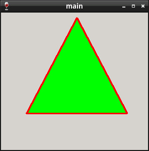

Steward
分享是一種喜悅、更是一種幸福
程式語言 - MASM32 - Painting - Draw Polygon
參考資訊：
http://www.winprog.org/tutorial/
http://winapi.freetechsecrets.com/win32/
https://github.com/gammasoft71/Examples_Win32
Polygon()可以用來繪製多邊形，需要傳入的資訊是一個座標點陣列，用來描述有哪些點需要被連接
main.asm
.386
.model flat,stdcall
option casemap:none
include c:\masm32\include\msvcrt.inc
include c:\masm32\include\windows.inc
include c:\masm32\include\kernel32.inc
include c:\masm32\include\gdi32.inc
include c:\masm32\include\user32.inc
includelib c:\masm32\lib\msvcrt.lib
includelib c:\masm32\lib\gdi32.lib
includelib c:\masm32\lib\user32.lib
includelib c:\masm32\lib\kernel32.lib
.data
szCaption db "main",0
hWin dd 0
hInstance dd 0
CommandLine dd 0
defWndProc dd 0
.code
WndProc proc hWnd:HWND, uMsg:UINT, wParam:WPARAM, lParam:LPARAM
local hdc:dword
local pen:dword
local brush:dword
local ps:PAINTSTRUCT
local pt[3]:POINT
.if uMsg == WM_PAINT
invoke BeginPaint, hWnd, addr ps
mov hdc, eax
invoke CreatePen, PS_SOLID, 3, 0ffh
mov pen, eax
invoke CreateSolidBrush, 0ff00h
mov brush, eax
invoke SelectObject, hdc, pen
invoke SelectObject, hdc, brush
mov pt[sizeof POINT * 0].x, 150
mov pt[sizeof POINT * 0].y, 10
mov pt[sizeof POINT * 1].x, 50
mov pt[sizeof POINT * 1].y, 200
mov pt[sizeof POINT * 2].x, 250
mov pt[sizeof POINT * 2].y ,200
invoke Polygon, hdc, addr pt, 3
invoke EndPaint, hWnd, addr ps
invoke DeleteObject, pen
invoke DeleteObject, brush
xor eax, eax
ret
.elseif uMsg == WM_CLOSE
invoke DestroyWindow, hWnd
xor eax, eax
ret
.elseif uMsg == WM_DESTROY
invoke PostQuitMessage, 0
xor eax, eax
ret
.endif
invoke CallWindowProc, defWndProc, hWnd, uMsg, wParam, lParam
ret
WndProc endp
WinMain proc hInst:DWORD, hPrevInst:DWORD, CmdLine:DWORD, CmdShow:DWORD
local msg:MSG
invoke CreateWindowEx, WS_EX_LEFT, WC_DIALOG, offset szCaption,
WS_OVERLAPPEDWINDOW or WS_VISIBLE, 0, 0, 300, 300, NULL, NULL, NULL, NULL
mov hWin, eax
invoke SetWindowLong, hWin, GWL_WNDPROC, WndProc
mov defWndProc, eax
@@:
invoke GetMessage, addr msg, NULL, 0, 0
cmp eax, 0
je @f
invoke DispatchMessage, addr msg
jmp @b
@@:
mov eax, msg.wParam
ret
WinMain endp
start:
invoke GetModuleHandle, NULL
mov hInstance, eax
invoke GetCommandLine
mov CommandLine, eax
invoke WinMain, hInstance, NULL, CommandLine, SW_SHOWDEFAULT
invoke ExitProcess, eax
end start
Line 43~49：使用三個座標點畫出一個三角形
完成
